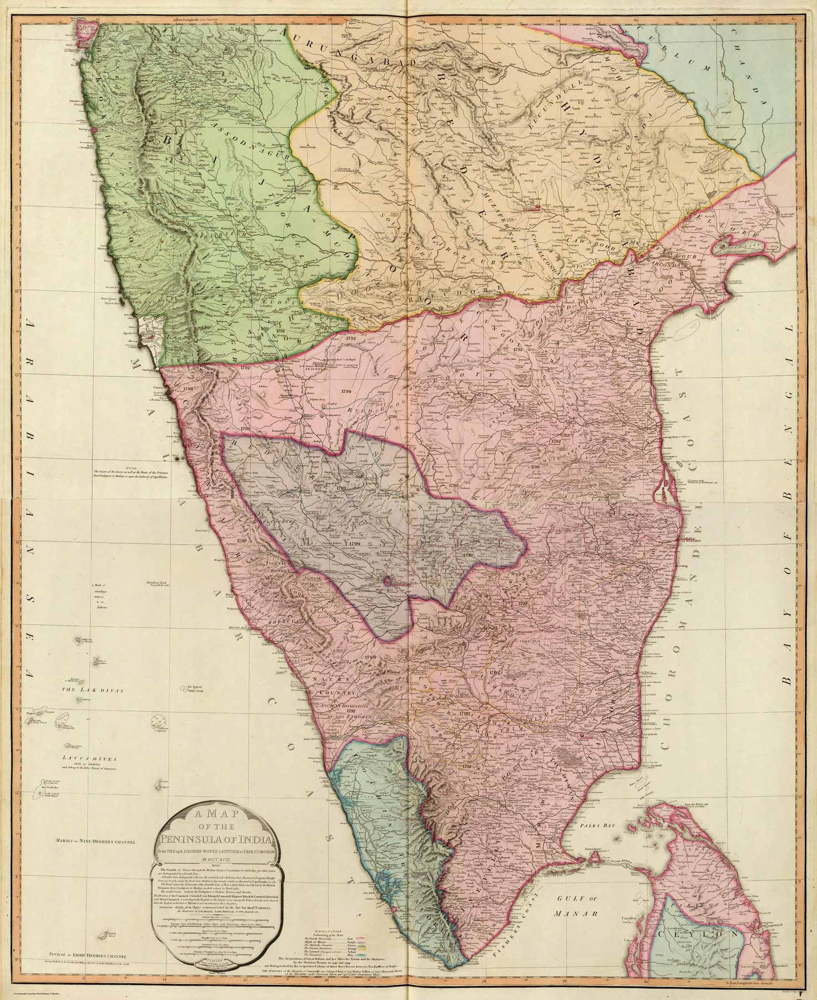

A third edition, not a different map
The full title retains the original date MDCCXCII but the imprint identifies this as the third edition, printed on 10 May 1800. Benjamin Baker revised the two sheets. It is a later state of the map shown in the 1792–93 issue.
After Seringapatam
Between the first issue and this edition, the Fourth Anglo-Mysore War ended with the fall of Seringapatam in 1799 and a major redistribution of territory. The map’s continued publication shows how survey geography born amid conflict settled rapidly into standard atlas knowledge.
The gaze
Nothing on the sheet announces the fall of Seringapatam. The date in the title is still MDCCXCII, and only the imprint records that Baker reworked the plates after the war. Survey knowledge produced in a campaign is passed on here in the quietest possible form, as a revised edition inside a general atlas.